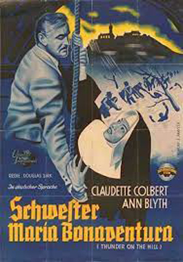
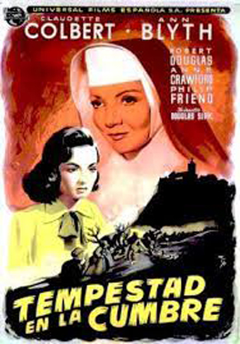
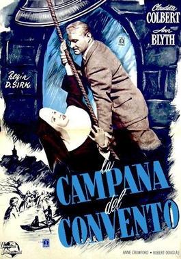

Thunder on The Hill
Claudette Colbert
Robert Douglas
Philip Friend
Michael Pate
Connie Gilchrist
Phyllis Stanley
Valerie Cardew
Patrick O'Moore
SYNOPSIS
Convicted murderess Valerie Carns (Ann Blyth) is being transported to Norwich to be executed when a flood strands her and her guards at a convent hospital. Nurse Sister Mary (Claudette Colbert) becomes convinced of her innocence and sets out to find the real killer.
Made by Universal-International Pictures and produced by Michael Kraike from a screenplay by Oscar Saul and Andrew Solt, and based on the play Bonaventure by Charlotte Hastings, Thunder on the Hill was first announced as an Universal-International Pictures project in August 1947, with plans for Robert Siodmak to direct and with Joan Fontaine and Burt Lancaster starring. The production was postponed to allow Lancaster to film All My Sons and Fontaine to film Letter from an Unknown Woman.
Thunder on the Hill was postponed again, to the autumn of 1948, this time to allow for the filming of Kiss the Blood Off My Hands, starring both Fontaine and Lancaster, which was to be immediately followed by You Gotta Stay Happy (co-starring Fontaine and James Stewart). Due to Fontaine's announced pregnancy during the filming of Kiss the Blood Off My Hands, the filming of Thunder on the Hill was again pushed back, this time to January 1949; by then the entire production team and its stars had been replaced.


